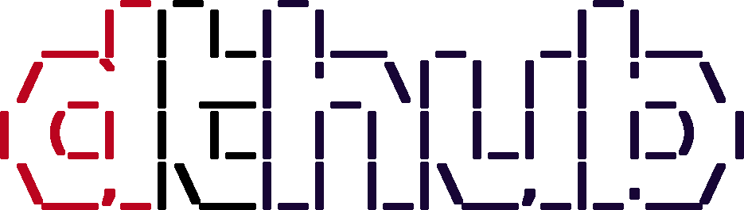

AY! Almighty one, you stumbled upon this shitty website!
Here, in a million years, a great hub shall be created. A hub,
giving great innovation to a futuristic society, empowering people
all over the world to do whatever they want.
What is supposed to happen

Right now, you can see the only page on this website, black on white, awful to look at
and worse to use. Yeah, that's the 1990's style you were looking for. So we need something
to make'er pretty, right? Until 2022, I want the basics of CSS and
maybe even JavaScript to be seared into my brain, and then, you can witness, well,
at least a decent website. I find the minimal, ASCII-art infused style of the
AdventOfCode website to be very appealing, so
I think I'll try to imitate that a little bit. (How do you make fuggin bloom? I don't
think I'll manage to include that)
But right now, you are only linked to my lame GitHub projects.
For example:
-
tictactoe-ncurses
-
lesson-controller
(Not yet Available to the public)
-
Shitty AdventOfCode 2021
(Available, but I take no responsibility)
-
When it has reached a better state, I also want the code
for this website to be available on GitHub. If I can,
I'll try to make this a professional homepage
(but without these embarassing portraits people usually have on their About-pages)